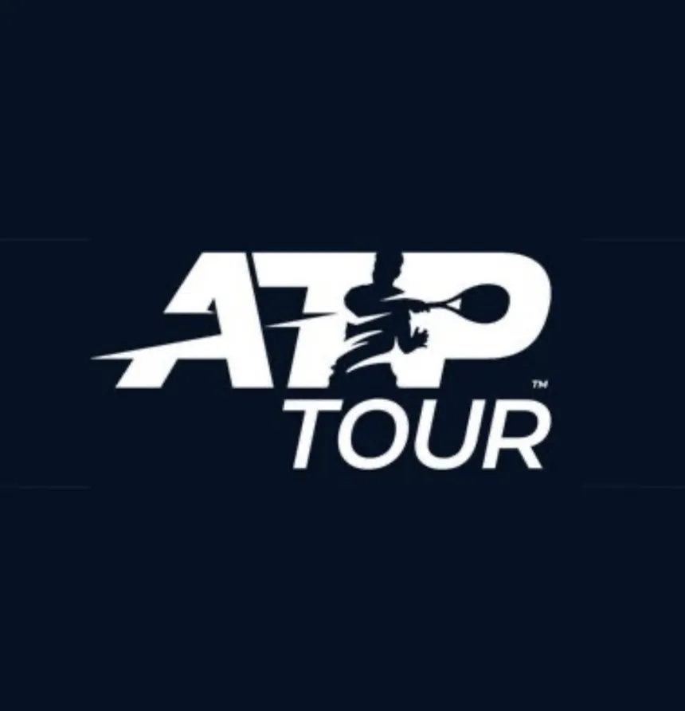

Había mucho más que un título en juego en la final del Rolex Monte-Carlo Masters. La pista Rainier III era testigo este domingo de un duelo, que ha adoptado tintes de clásico histórico, entre los dos encargados de proteger en los últimos tiempos el No. 1 del PIF ATP Rankings y los grandes títulos. Carlos Alcaraz y Jannik Sinner.
Esta vez, el segundo favorito destronó al vigente campeón en Montecarlo para conquistar su primer título en este ATP Masters 1000 sobre tierra batida, tras superar a Alcaraz por 7-6(5), 6-3, en dos horas y 15 minutos. Además, el triunfo le permite arrebatar el No. 1 del mundo al español.
"Vinimos para intentar el máximo de partidos posible y tener buenas sensaciones antes de otros grandes torneos que vienen por delante. Hoy estuvimos a un alto nivel", indicó Sinner.

Recupera la corona en El Principado 👑
@janniksin | @ROLEXMCMASTERS

Y es que más allá del prestigio de levantar el octavo ATP Masters 1000 de su carrera, Sinner deshizo la igualdad que mantenía en semanas acumuladas en la cima mundial con Alcaraz. Ambos compartían, a día de hoy, 66 al frente del PIF ATP Rankings, y este lunes sumará una más como la mejor raqueta del mundo, dejando atrás al murciano.
El italiano ha ido recortando la distancia con la primera plaza que ocupaba Alcaraz, gracias a un gran inicio de temporada. Sin ir más lejos, ha firmado una proeza que sólo ha logrado Novak Djokovic antes: ganar los tres primeros ATP Masters 1000 del año en Indian Wells, Miami y Montecarlo.
Finalistas en los tres primeros ATP Masters 1000 del año
| Jugador | Año | Resultados |
|---|---|---|
| Roger Federer | 2006 | Indian Wells (v. a Blake), Miami (v. a Ljubicic), Montecarlo (p. con Nadal) |
| Rafael Nadal | 2011 | Indian Wells (p. con Djokovic), Miami (p. con Djokovic), Montecarlo (v. a Ferrer) |
| Novak Djokovic | 2015 | Indian Wells (v. a Federer), Miami (v. a Murray), Montecarlo (v. a Berdych) |
| Jannik Sinner | 2026 | Indian Wells (v. a Medvedev), Miami (v. a Lehecka), Montecarlo (v. a Alcaraz) |
Para recuperar su estatus, Sinner ha protagonizado una imponente racha de 17 victorias consecutivas en los ATP Masters 1000. El español debía blindarse en la gira sobre tierra batida desde el inicio, tras ganar en 2025 en Montecarlo, Roma y Roland Garros.
A pesar de su gran momento, no era fácil el reto para Sinner. El murciano de 22 años había ganado 26 de sus últimos 27 partidos en la superficie y en los 18 encuentros más recientes en tierra siempre había celebrado el triunfo. Todo parecía seguir la misma dinámica, cuando Alcaraz tomó una ventaja de 2-0 en el primer set.
Sinner sumó tres juegos consecutivos para restablecer el orden de los servicios. Hasta que el tie-break decidió la manga inicial. El italiano, que llegó a sacar con 6/4 para cerrar, vio cómo el español escapaba del primer punto de set, pero entregó el set con una doble falta, tras una hora y 14 minutos de encuentro.
“Sentí que hice daño al resto y que las pelotas nuevas me ayudaron, el cambio con 2-1, traté de mantenerme mentalmente”, indicó el italiano sobre su recuperación en el segundo set. “Intenté seguir presionando. Estaba un poco cansado, así que intenté seguir con la mentalidad adecuada y ganar este trofeo significa mucho”.
En el segundo parcial se repitió la historia. De nuevo, Alcaraz se adelantó con un break 3-1, pero el italiano se quedó los últimos cinco juegos para acabar cerrando 22 victorias consecutivas en los torneos ATP Masters 1000, conquistando el título en París 2025, Indian Wells 2026, Miami 2026 y Montecarlo 2026.